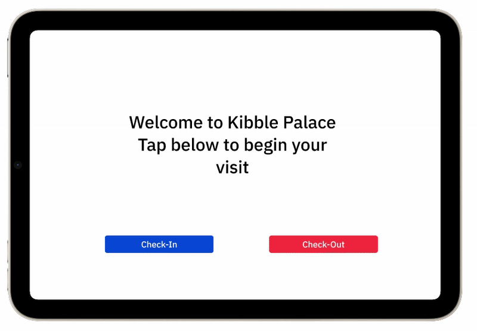
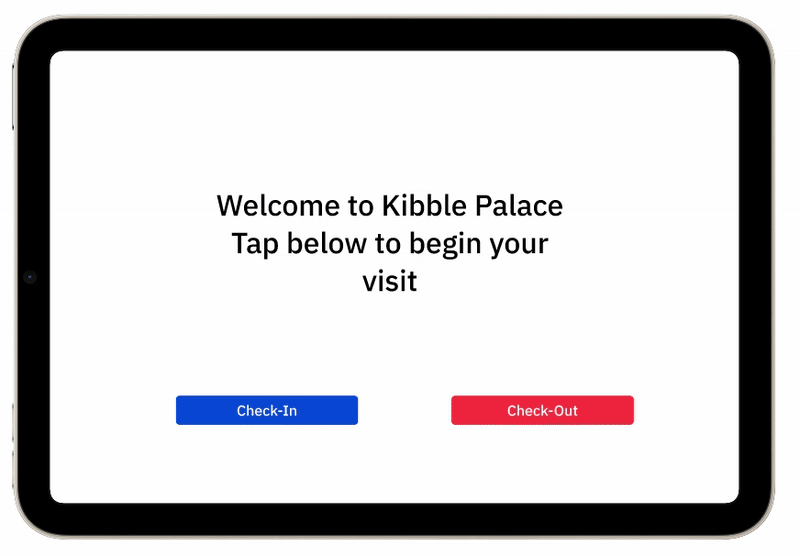

Design Journey
Comprehensive documentation of our user-centered design process
Prototyping
Developed interactive prototypes for both QR code and kiosk interfaces, conducting iterative user testing to refine the user experience and validate design decisions with real users.
Prototyping Methodology: Storyboarding
User JourneyWe began our prototyping process with comprehensive storyboarding to map out user journeys and identify key interaction points. This helped us understand the complete visitor experience and design touchpoints that would seamlessly integrate into their natural flow.
Storyboarding Outcomes
Iterative Prototyping Process
3 PhasesFollowing our storyboarding phase, we adopted an iterative prototyping approach, progressing from low-fidelity paper prototypes to high-fidelity interactive demos. This methodology allowed us to test and refine concepts quickly while minimizing development costs.
Lo-Fi Paper Prototypes
We came out with Lo-Fi paper prototypes to rapidly explore multiple interface concepts without technical constraints.
Hi-Fi Functional Prototypes
Then we developed Hi-Fi functional prototypes so that we could provide final validation of our design decisions. With realistic visuals, actual QR code generation, and functional interfaces, we could conduct comprehensive user testing and demonstrate the complete solution to stakeholders for final approval.
 
